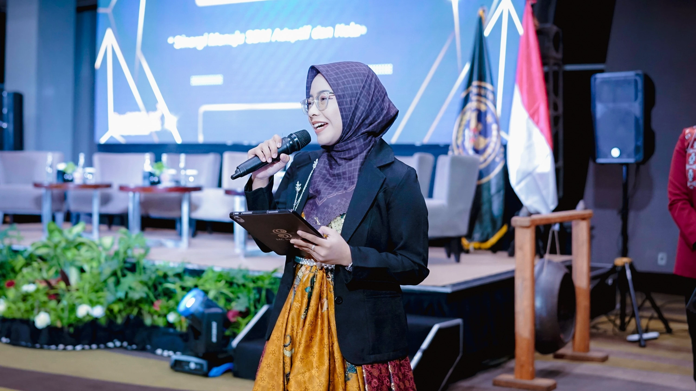
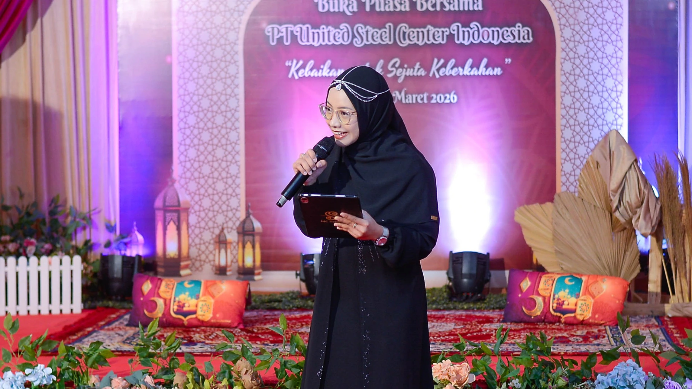
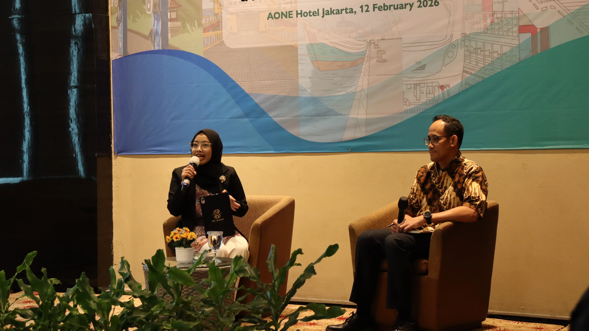
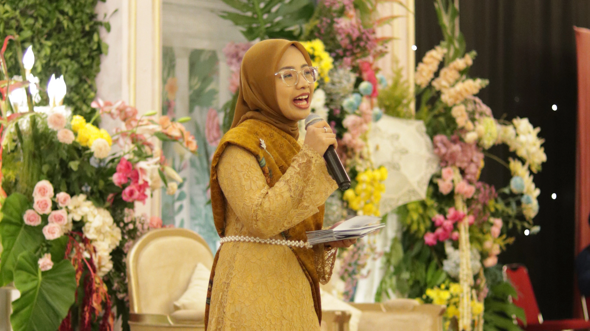

Membantu audiens merasa disambut, terlibat, dan menjadi bagian dari pengalaman. Dari pertemuan profesional hingga perayaan yang penuh makna.
Setiap acara memiliki tujuannya sendiri. Ada yang dirancang untuk berbagi gagasan, memperkuat hubungan, atau merayakan pencapaian penting. Syaidah percaya bahwa menjadi MC bukan sekadar memandu agenda dari satu sesi ke sesi berikutnya. Ini tentang menciptakan suasana di mana pembicara merasa dihargai, tamu merasa disambut, dan percakapan mengalir dengan natural. Melalui kehangatan, kepekaan, dan keterlibatan audiens yang tulus, ia membantu acara terasa profesional sekaligus benar-benar berkesan.




"Seneng banget para tamu vip dapat pujian unik dari kak Syaidah, acara jadi ngga kaku."
"MC keren dan cantik, mau diajak diskusi, humble banget. Seneng banget dapet MC kayak gini."
"Next kalau ada acara lagi mauuu sama kak Syaidah lagi."
Nur Syaidah merupakan lulusan Ilmu Komunikasi yang telah membawakan berbagai acara sejak 2017, dari forum komunitas yang intim hingga konferensi pemerintah berskala besar. Sebagai anggota aktif Toastmasters International dan MC bilingual bersertifikat, ia membawa keduanya, struktur yang rapi dan kehangatan yang tulus di setiap panggung yang ia pijak.
"Acara yang paling berkesan bukan selalu yang paling megah. Melainkan yang membuat orang merasa dilihat, dihargai, dan terhubung."